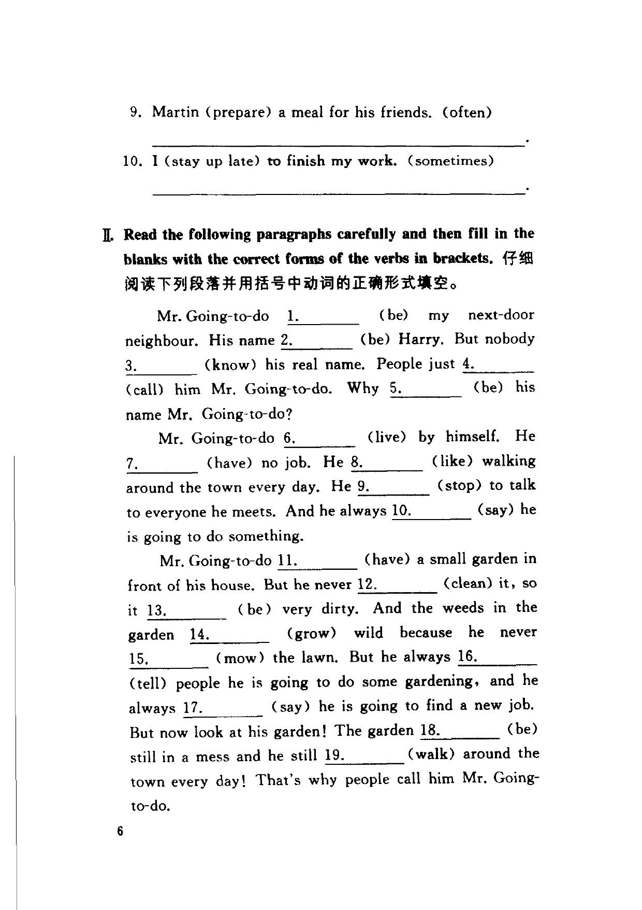
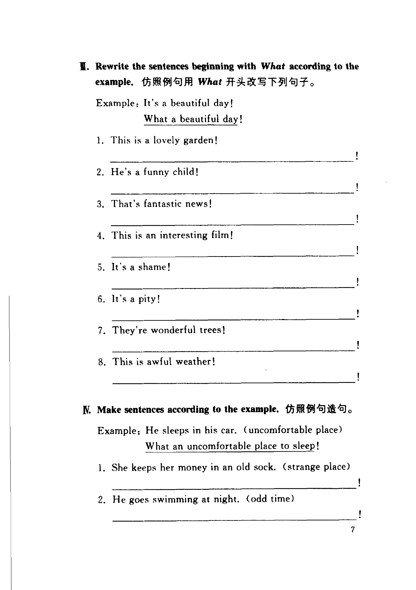

Grammar exercises · 语法练习
I. Write the following sentences in the correct present tense.
用正确的现在时态写出下列句子。
Example · 例句
He (get up) early on Sundays. (never)
He never gets up early on Sundays.
-
I. Present tense — Gary (clean) the bathroom. (every day)
-
I. Present tense — My parents (visit) my sister in the United States. (now)
-
I. Present tense — The boy (go) to school hungry. (frequently)
-
I. Present tense — He (listen to) music in his room. (at the moment)
-
I. Present tense — He (worry) very much about his son. (seldom)
-
I. Present tense — He (work) in the same office after 40 years! (still)
-
I. Present tense — It (take) a long time to get there by sea. (always)
-
I. Present tense — The boy (have) his breakfast. (still)
-
I. Present tense — Martin (prepare) a meal for his friends. (often)
-
I. Present tense — I (stay up late) to finish my work. (sometimes)
II. Read the following paragraphs carefully and then fill in the blanks with the correct forms of the verbs in brackets.
仔细阅读下列段落并用括号中动词的正确形式填空。
Mr. Going-to-do
1. (be) my next-door neighbour. His name
2. (be) Harry. But nobody
3. (know) his real name. People just
4. (call) him Mr. Going-to-do. Why
5. (be) his name Mr. Going-to-do?
Mr. Going-to-do
6. (live) by himself. He
7. (have) no job. He
8. (like) walking around the town every day. He
9. (stop) to talk to everyone he meets. And he always
10. (say) he is going to do something.
Mr. Going-to-do
11. (have) a small garden in front of his house. But he never
12. (clean) it, so it
13. (be) very dirty. And the weeds in the garden
14. (grow) wild because he never
15. (mow) the lawn. But he always
16. (tell) people he is going to do some gardening, and he always
17. (say) he is going to find a new job. But now look at his garden! The garden
18. (be) still in a mess and he still
19. (walk) around the town every day! That's why people call him Mr. Going-to-do.
-
II. Mr. Going-to-do — Mr. Going-to-do (be) my next-door neighbour
-
II. Mr. Going-to-do — His name (be) Harry
-
II. Mr. Going-to-do — But nobody (know) his real name
-
II. Mr. Going-to-do — People just (call) him Mr. Going-to-do
-
II. Mr. Going-to-do — Why (be) his name Mr. Going-to-do?
-
II. Mr. Going-to-do — Mr. Going-to-do (live) by himself
-
II. Mr. Going-to-do — He (have) no job
-
II. Mr. Going-to-do — He (like) walking around the town every day
-
II. Mr. Going-to-do — He (stop) to talk to everyone he meets
-
II. Mr. Going-to-do — And he always (say) he is going to do something
-
II. Mr. Going-to-do — Mr. Going-to-do (have) a small garden
-
II. Mr. Going-to-do — But he never (clean) it
-
II. Mr. Going-to-do — so it (be) very dirty
-
II. Mr. Going-to-do — the weeds in the garden (grow) wild
-
II. Mr. Going-to-do — because he never (mow) the lawn
-
II. Mr. Going-to-do — But he always (tell) people he is going to do some gardening
-
II. Mr. Going-to-do — and he always (say) he is going to find a new job
-
II. Mr. Going-to-do — The garden (be) still in a mess
-
II. Mr. Going-to-do — and he still (walk) around the town every day!
III. Rewrite the sentences beginning with What according to the example.
仿照例句用 What 开头改写下列句子。
Example · 例句
It's a beautiful day!
What a beautiful day!
-
III. What exclamations — This is a lovely garden!
-
III. What exclamations — He's a funny child!
-
III. What exclamations — That's fantastic news!
-
III. What exclamations — This is an interesting film!
-
III. What exclamations — It's a shame!
-
III. What exclamations — It's a pity!
-
III. What exclamations — They're wonderful trees!
-
III. What exclamations — This is awful weather!
IV. Make sentences according to the example.
仿照例句造句。
Example · 例句
He sleeps in his car. (uncomfortable place)
What an uncomfortable place to sleep!
-
IV. What exclamations — She keeps her money in an old sock. (strange place)
-
IV. What exclamations — He goes swimming at night. (odd time)
-
IV. What exclamations — She dances on her flat roof. (dangerous place)
-
IV. What exclamations — She makes money by telling fortunes. (interesting way)
-
IV. What exclamations — He travels by donkey. (slow way)
-
IV. What exclamations — She relaxes by standing on her head. (funny way)
-
IV. What exclamations — He makes all his important decisions in his toilet. (extraordinary place)
-
IV. What exclamations — He parked his car outside the police station. (silly place)
-
IV. What exclamations — He refused my help by saying, "It's none of your business." (rude thing)
-
IV. What exclamations — He reads in the shopping centre. (noisy place)
Original images · 原图对照
Expand a page to compare it with the transcription. Open the original in a new tab to zoom in.
展开原图核对文字，也可以在新标签页打开原图放大查看。

Book page 2 · Exercise I (items 9–10) and Exercise II (Mr. Going-to-do passage)
Open original · 打开原图 ↗ Download original · 下载原图


Book page 3 · Exercise III (items 1–8) and Exercise IV (items 1–2)
Open original · 打开原图 ↗ Download original · 下载原图



Your notes and answers
Use this space for longer responses or exercises that do not have an individual answer box.